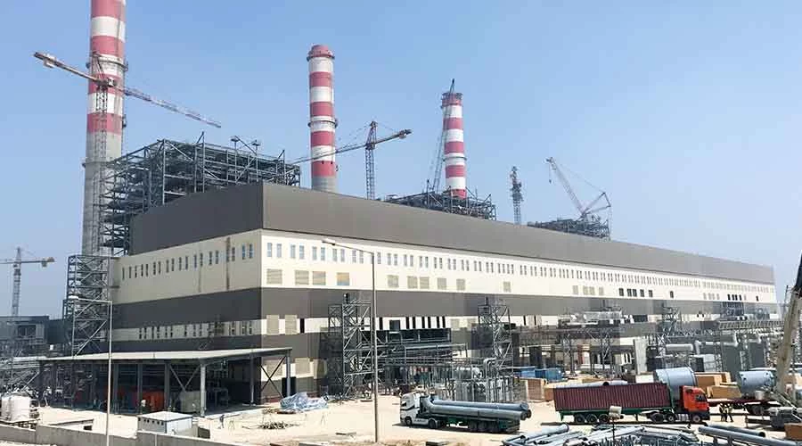
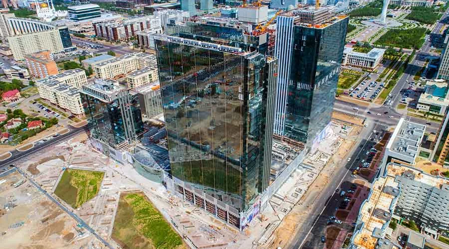
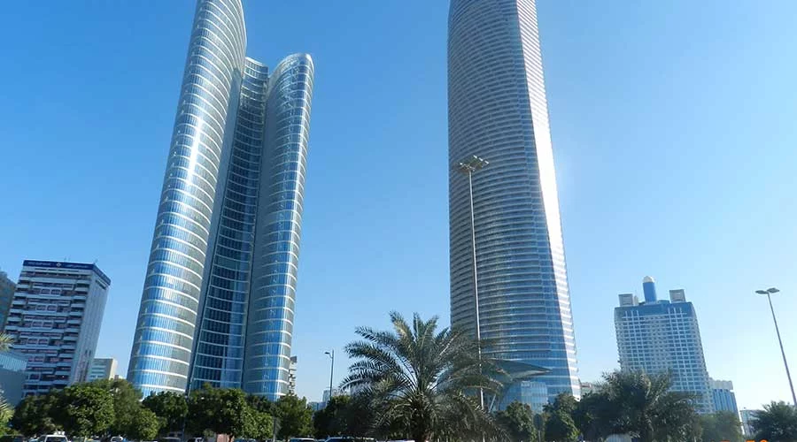

South Helwan 3x650 MW Thermal Power Plant Design, fabrication, furnishing delivery to site, storing, installing, testing, startup, commissioning, maintaining until Taking Over and Acceptance Certification, preparation of detailed drawings and technical documents, as-built documents and placing in service of all civil, architectural works, associated systems and equipment including instruments and controls for the Helwan Power Station (CP-102). Major buildings/structures are Site preparation and grading, underground utilities, three steam turbine generators, control building, furniture, one CAD station, three 152 m height chimneys, foundations for water pumps, transformers, pits and sumps, etc. and auxiliary facilities including intake, pump house, discharge, surge tanks, and circulating water building.

Abu Dhabi Plaza CCC scope includes the development, design, procurement, construction, installation, testing, operation, maintenance and management of a mixed use development of 500,000 m², comprising 5 towers and retail podium over a basement car park: Block H: 4-star 190 key business hotel and 100 key serviced apartments, 14 storeys. Block R: Mixed use 75 storey tower 310 m high, lower third office and upper two thirds residential units. Block O: Class A+ office building 27 storeys. Block Y: Class A+ office building 30 storeys. Block Z: Residential tower 16 storeys. Block P/B: 4 storey basement and 2 storey above ground retail podium.

The Landmark Tower THE SECOND TALLEST BUILDING IN ABU DHABI The Tower sits on a 5 storey deep basement measuring approximately 120 m x 150 m which extends across the full area of the site and beneath the road to south of the site. The basement comprises a temporary reinforced concrete diaphragm wall (not part of the contract) with a permanent reinforced concrete wall within. The internal wall is propped by the floor plates to resist the soil and water pressure. The floor structure is a reinforced concrete flat slab supported on 9 m x 9 m column grid. The columns are supported on a 900 mm thick raft slab with tension piles to resist uplift pressure. The main Tower structure is supported on 4 m thick raft slab which is tied intro the thinner 900 mm slab of the remainder of the basement structure. The tower itself measures 329 m in height from ground level and is comprised of a central reinforced concrete core containing the lifts and stairs, with perimeter round and blade columns supporting the 72 floors of main post tensioned floor plates. The columns and blade walls are predominantly in-sit reinforced concrete.